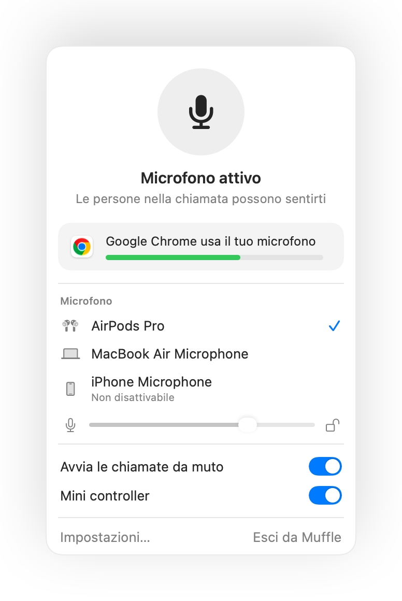
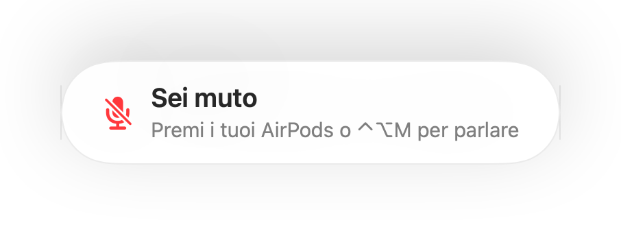
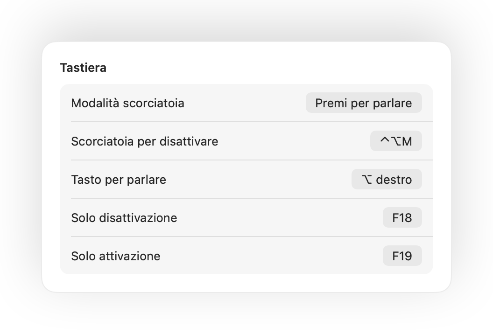
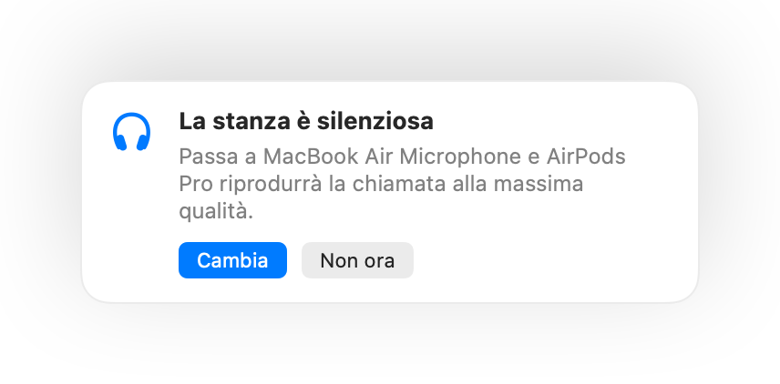
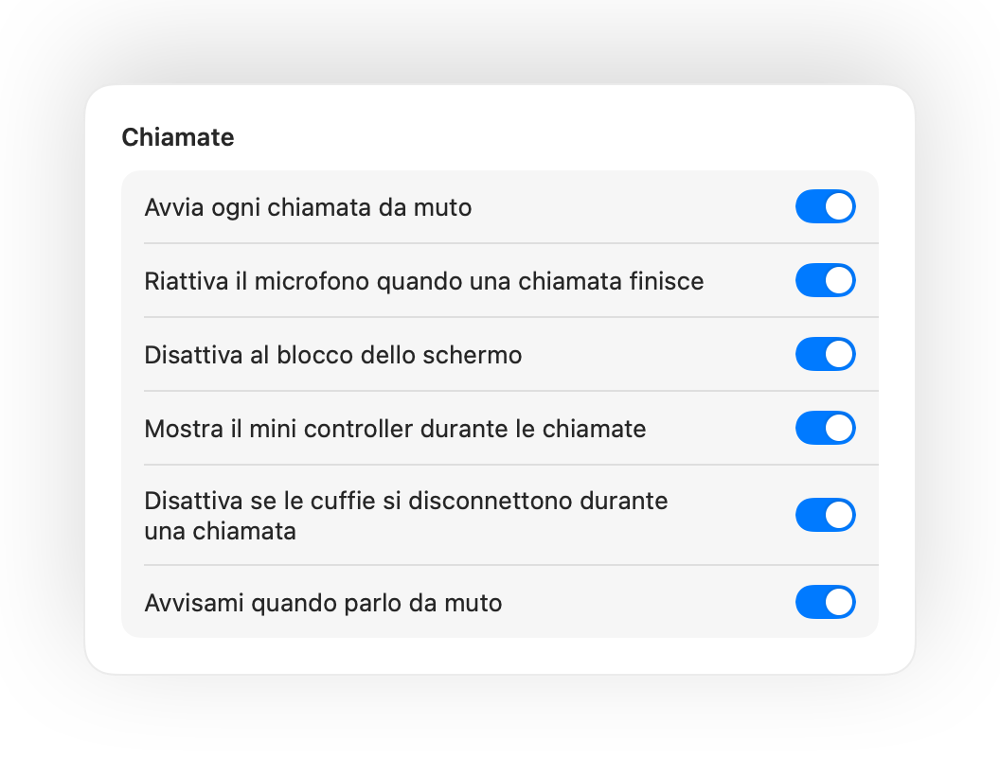

Premi i tuoi AirPods per disattivare
Durante qualsiasi chiamata, premi lo stelo una volta per disattivare il microfono e di nuovo per riattivarlo. Funziona anche su Chrome, dove Google Meet e altre chiamate web ignorano la pressione degli AirPods.
Muffle per Mac
Premi i tuoi AirPods o usa una scorciatoia da tastiera. Muffle disattiva direttamente il microfono, così Google Meet, Zoom, Teams, Slack e qualsiasi altra app sentiranno solo silenzio.
Gratis per 3 giorni. Poi acquisto unico, nessun abbonamento. Per macOS 14 Sonoma e versioni successive.
Disattiva il microfono, scegli quale usare, blocca il livello e gestisci le funzioni direttamente dalla barra dei menu.
Muffle disattiva il microfono a livello hardware, quindi non importa quale app, browser o scheda aperta tu stia usando.
Durante qualsiasi chiamata, premi lo stelo. Muffle disattiva direttamente il microfono, così Meet, Zoom, Teams e tutte le altre app non sentono nulla.
Muffle riconosce la tua voce e ti avvisa, prima che tu spieghi un'intera idea a nessuno.

La maggior parte dei pulsanti disattiva una sola app. Muffle disattiva direttamente il microfono, così ogni app sul tuo Mac sente solo il silenzio.
Durante qualsiasi chiamata, premi lo stelo una volta per disattivare il microfono e di nuovo per riattivarlo. Funziona anche su Chrome, dove Google Meet e altre chiamate web ignorano la pressione degli AirPods.
Se inizi a parlare con il microfono disattivato, Muffle ti avvisa subito, prima che tu finisca di spiegare tutta la tua idea al silenzio.

Control-Opzione-M disattiva il microfono ovunque, anche quando la riunione è in una scheda in background. Tienilo premuto per parlare quando sei muto e rilascialo per disattivare di nuovo.
Un piccolo pulsante fluttuante mostra lo stato del microfono durante le chiamate. Cliccaci sopra per disattivare o riattivare l'audio.

Scegli come far funzionare la scorciatoia: premi per attivare/disattivare, tieni premuto per parlare o tieni premuto per disattivare e tossire. Aggiungi tasti separati per attivare e disattivare, oppure tieni premuto un solo tasto come ⌥ destro o un pulsante extra del mouse.

Hai attivato il microfono solo per dire una cosa? Se poi non parli per il tempo che scegli, Muffle ti disattiva di nuovo. Conta solo la tua voce, non la digitazione o i rumori di fondo.
Con gli AirPods in una stanza silenziosa, Muffle consiglia il microfono del Mac: così gli AirPods riproducono la chiamata alla massima qualità. Se la stanza diventa rumorosa, ti suggerisce il microfono degli AirPods.

Chrome, Zoom e Teams modificano spesso il livello del microfono da soli. Con Muffle puoi bloccarlo al livello che preferisci e non si sposterà più.
Avvia ogni chiamata da muto, riattiva il microfono quando la conversazione finisce e disattivalo automaticamente ogni volta che blocchi lo schermo del Mac.

Se le tue cuffie si scollegano a metà conferenza, Muffle disattiva subito l'audio prima che la chiamata passi al microfono del Mac trasmettendo i rumori della stanza.
Disattiva il microfono dall'app Comandi Rapidi, con Siri, da Stream Deck, Raycast oppure con un pulsante nel Centro di Controllo.
Un'illuminazione verde o rossa attorno allo schermo, un'icona colorata nella barra dei menu, un pulsante mobile e un suono che puoi disattivare per ciascun microfono. Attiva le opzioni che preferisci.
Muffle non registra, non memorizza e non invia mai l'audio. Si limita ad attivare o disattivare il microfono e a leggerne il volume. Nessun account, nessuna statistica di utilizzo, nessun tracciamento.
Installa Muffle dal Mac App Store e consenti l'accesso al microfono.
Entra in chiamata da qualsiasi app, come fai sempre.
Premi i tuoi AirPods, usa Control-Opzione-M oppure clicca sull'icona nella barra dei menu per disattivare l'audio.
Sì. Chrome non trasmette la pressione degli AirPods alle chiamate web, perciò Muffle la intercetta e disattiva direttamente il microfono a monte. La stessa cosa vale per qualsiasi videochiamata aperta nel browser.
L'app della chiamata potrebbe mostrare il microfono ancora attivo, perché Muffle spegne l'hardware del microfono anziché premere il pulsante interno all'app. In ogni caso nessuno potrà sentirti. L'icona di Muffle nella barra dei menu diventa rossa quando sei muto.
AirPods Pro, AirPods di terza generazione e successive, AirPods Max, oltre ai modelli Beats dotati di controlli per le chiamate. La scorciatoia da tastiera e l'icona nella barra dei menu funzionano con qualsiasi microfono.
Sì. Muffle funziona con qualsiasi app sul Mac che utilizzi il microfono, sia programmi installati che chiamate web nel browser.
No. Puoi provare gratis tutte le funzioni per 3 giorni, poi potrai sbloccare Muffle per sempre con un unico acquisto.
macOS inoltra la pressione degli AirPods solo alle app autorizzate a usare il microfono. Durante le chiamate Muffle mantiene aperta una connessione silenziosa per ricevere il comando. Nessun suono viene registrato.
Muffle riattiva automaticamente il microfono prima di chiudersi, così non rischierai mai di restare senza audio.
macOS 14 Sonoma e versioni successive. Il pulsante dedicato nel Centro di Controllo richiede macOS 26 o successivo.
Sì. Scegli "Premi per parlare" nelle impostazioni e tieni premuta la scorciatoia per parlare. Puoi anche tenere premuto un singolo tasto come ⌥ destro o fn, oppure un pulsante aggiuntivo del mouse.
Quando una chiamata usa il microfono degli AirPods, le cuffie passano alla modalità chiamata, che riproduce l'audio a una qualità inferiore. In una stanza silenziosa Muffle ti consiglia invece il microfono del Mac, così gli AirPods continuano a farti ascoltare l'audio alla massima qualità.
No. Muffle riconosce la voce con l'analisi sonora integrata sul dispositivo di Apple, quindi conta solo quando parli. Digitazione, clic e rumori di fondo vengono ignorati e non viene registrato nulla.
Prova Muffle gratis per 3 giorni.